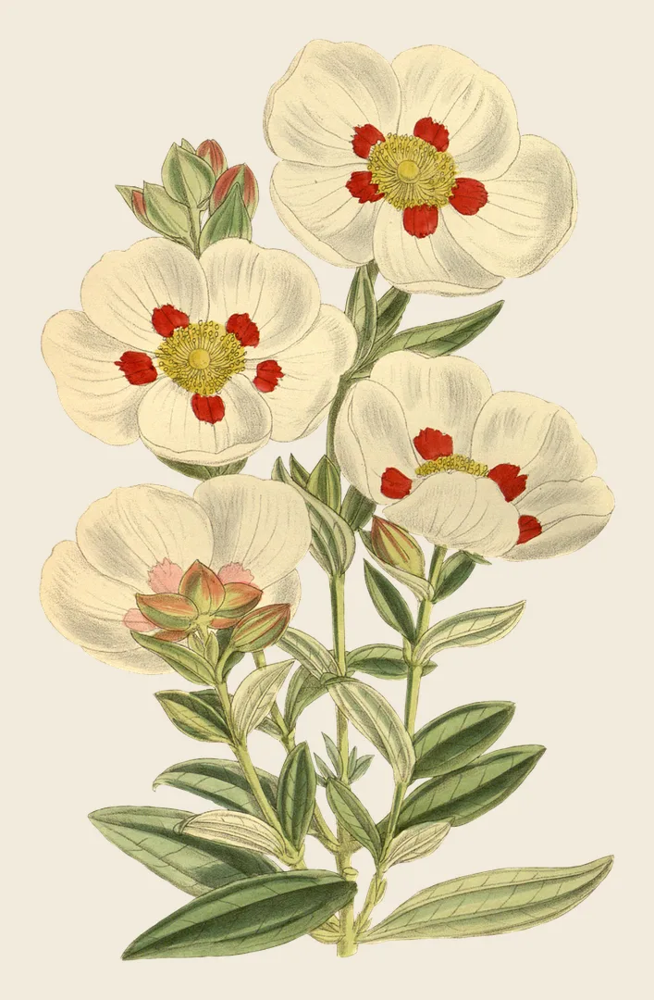
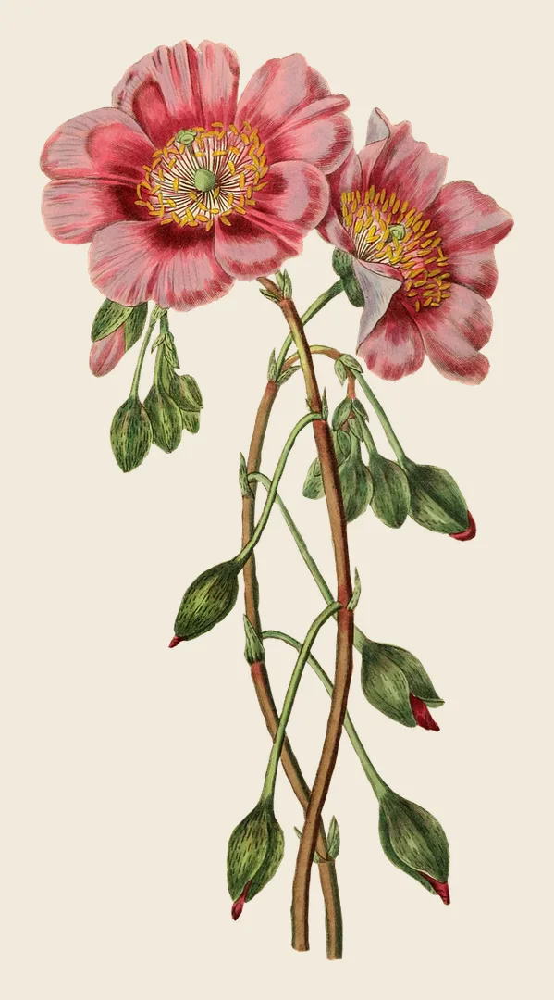
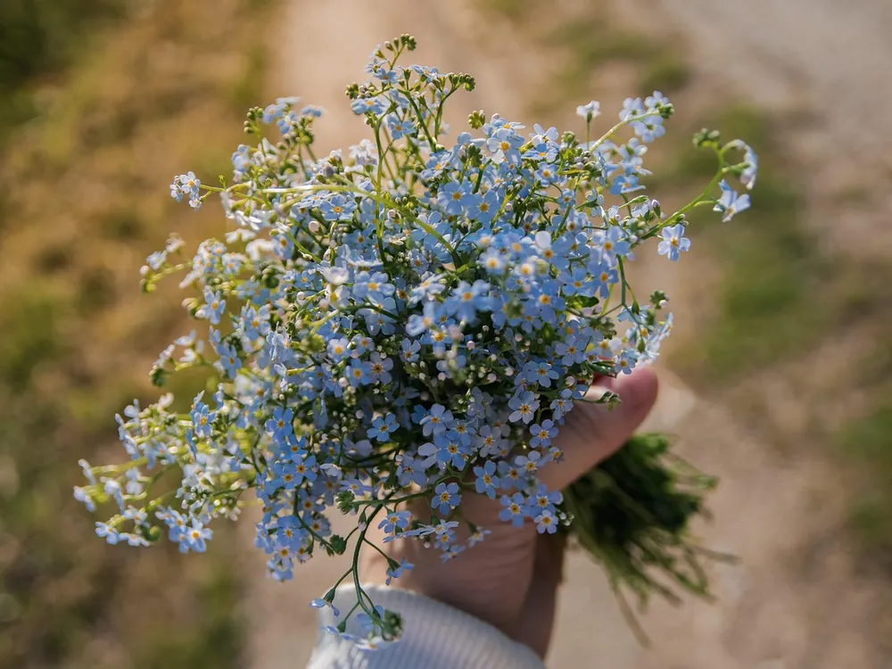
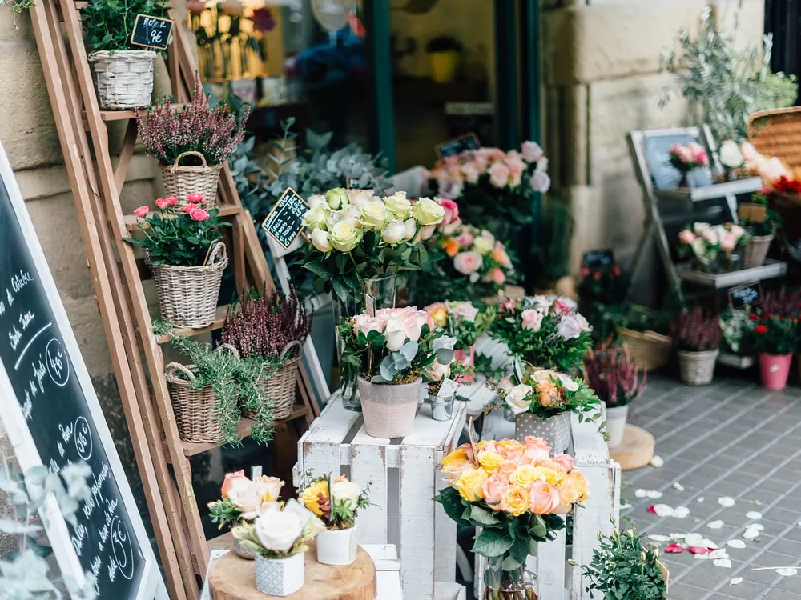
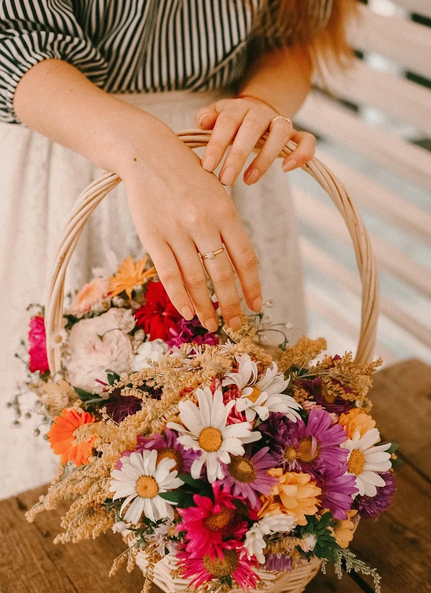

Les fleurs du maquis, en bouquet
Ciste, immortelle et fleurs de saison, composés sous vos yeux dans la vieille ville de Bastia.

Cistus salviifoliusN° 12 · le ciste du maquis
Papaver rhoeasN° 27 · en mai, au bord des routesComposez votre bouquet
Touchez une fleur autant de fois que vous voulez de tiges. Le bouquet se dessine, le prix s’affiche, on le prépare pour l’heure qui vous arrange.
Pour chaque moment
Du petit bouquet du matin à l’arche d’un mariage. Touchez une ligne pour en savoir plus.
Ce qui fleurit en ce moment
Nous suivons les saisons d’ici. Tournez la roue pour voir ce qui arrive à la boutique le reste de l’année.


De l’étal au bouquet
Chaque matin, on défait les bottes, on recoupe les tiges, on met à l’eau. Le bouquet, lui, se fait devant vous : on parle de la personne, de l’occasion, de la couleur de son salon. Faites glisser la photo.

cueilli à la mainavec l’accord des propriétairesCueilli près d’ici
Le ciste, la myrte et l’immortelle, nous les cueillons nous-mêmes dans les collines. Le reste vient des producteurs du Cap Corse et de la plaine orientale, et du marché de gros chaque mardi.
- LivraisonDans Bastia le jour même, pour une commande avant 11 h.
- AbonnementUn bouquet frais chaque lundi, pour un bureau, un hôtel ou un restaurant.
- AtelierUn samedi par mois, apprendre à composer son bouquet.
Comment ça se passe
Sur place, par téléphone ou depuis cette page : c’est la même attention.
Vous composez
Ici, fleur par fleur, ou à la boutique avec nous. Un mot sur l’occasion nous aide beaucoup.
On prépare
Le bouquet est fait le jour même, pour l’heure que vous nous donnez.
Vous passez, ou on livre
Retrait rue des Fleurs, ou livraison dans Bastia avant le soir.
L’adresse
12, rue des Fleurs, Bastia
À deux minutes de la place du marché